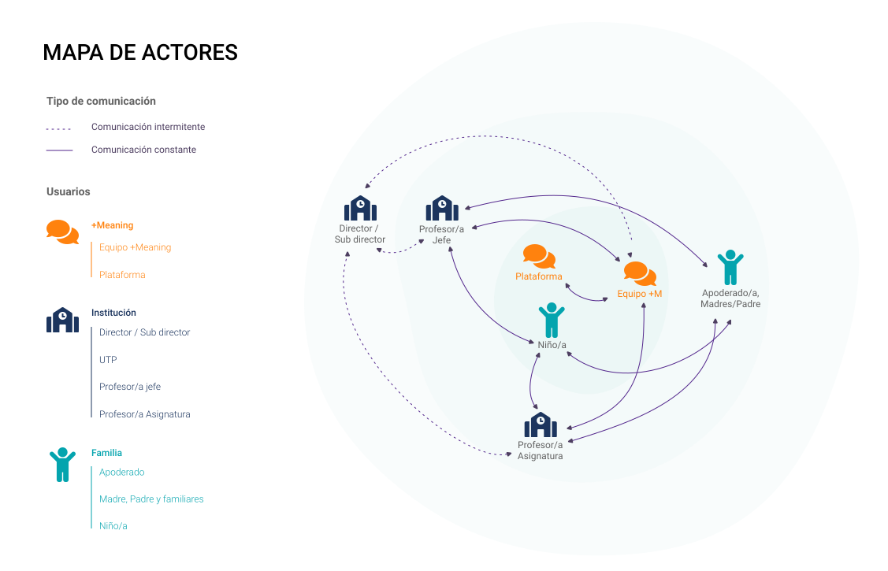
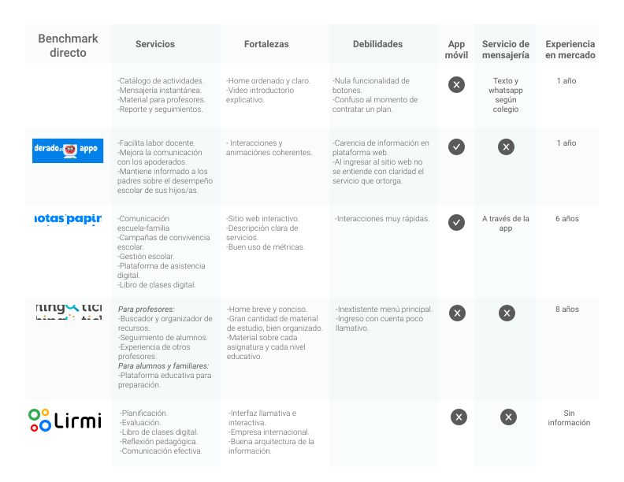
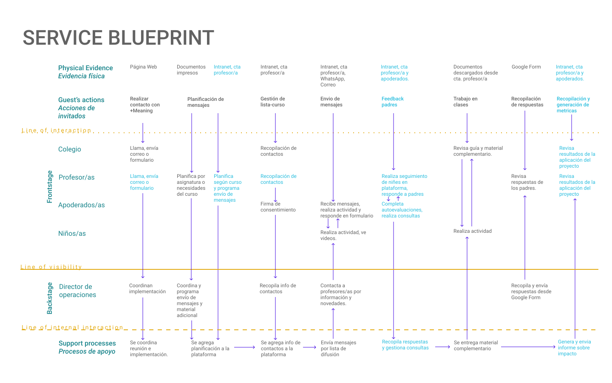

Mi rol

Design Thinking

UX Research
Information architecture

Prototyping>
+Meaning es un proyecto que permite la generación de redes entre profesores y apoderados dentro de los colegios. Mediante el envío de mensajes de texto con pequeñas actividades prácticas, busca reforzar conocimientos curriculares y activar el acompañamiento emocional por parte de los padres y madres con sus hijos e hijas.
Design Thinking
UX Research
Information architecture
Prototyping>
Este proyecto se organiza para su implementación en colegios con tres grupos responsables en el proceso educativos de los y las niñas, estos son la Dirección y/o UTP, los/las profesoras/es, y los/las apoderadas/os; pero sólo estos dos últimos grupos hacen uso de la plataforma:
-Profesores/as son quienes acceden a la plataforma para administrar, seleccionar y enviar los mensajes;
-Apoderados/as, son quienes reciben estos mensajes, y responsables de aplicar las actividades con los/as niños/as.
La investigación, conclusiones y propuestas en este proyecto fueron desarrolladas mediante la metodología de Design thinking, esta permite la obtención de información, mejoras y soluciones centradas en las necesidades reales de los y las usuarios/as.
Esta metodología aplica, dentro de sus 5 etapas, actividades como observaciones conductuales, entrevista, revisión de referentes, diversas evaluaciones, testeos a usuarios y esquematización de procesos que permiten identificar oportunidades de mejoras adecuadas al contexto y necesidades de usuarios, incluyendo también herramientas para el desarrollo del diseño visual de las propuestas, la arquitectura de los contenidos y el diseño de las interacciones.
Se esquematiza en un mapa de actores el tipo de comunicación y el grado de cercanía entre usuarios, para comprender los flujos de comunicación y las relaciones dentro del servicio.
El análisis de referentes directos nos señala el camino ya recorrido, entrega experiencias visuales y funcionales. En este caso el foco estuvo en otros servicios que tengan como objetivo apoyar a profesores en la comunicación con los padres y apoderados.
Esta herramienta grafica los componentes del servicio interactuando en diferentes instancias; describiendo acciones, usuarios, tecnologías y materiales que inciden en el proceso; esto con el fin de ampliar la comprensión del servicio, vinculando los puntos de dolor con acciones e instancias concretas, que permitan identificar oportunidades de mejora.

La primera versión incluye acciones destacadas que surgieron de la investigación.

La segunda es una evaluación del servicio que identifica 2 puntos de dolor y 2 instancias destacadas.
Identificados los lineamientos de nuestras propuestas, definimos para desarrollar 3 ideas principales: